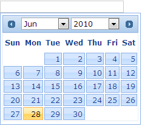

Using Builder
The following section explains enabling the month/year drop downs of the Date Picker using Builder.
1. In View, invoke the date picker helper followed by the the ChangeYear and ChangeMonth methods, with the arguments set to ‘true’.
|
View[aspx]
<%=Html.Syncfusion().DatePicker("myDatPicker") .ChangeMonth(true) .ChangeYear(true)%>
|
|
View[cshtml]
@{ Html.Syncfusion().DatePicker("myDatPicker") .ChangeMonth(true) .ChangeYear(true).Render();}
|
2. Build and run the application.
Using Properties Model
The following section explains enabling month/year drop downs of the Date Picker using the Properties model.
1. In the Controller, create an instance of the DatePickerModel, set the ChangeYear and ChangeMonth properties and pass the instance through view specific data to View as given below.
|
[Controller]
public ActionResult Index() { //create an instance of DatePickerModel DatePickerModel myModel = new DatePickerModel(); myModel.ChangeMonth = true; myModel.ChangeYear = true;
//pass the instance through view data to the view ViewData["myDatePicker"] = myModel; return View(); }
|
2. In View, invoke the Date Picker helper with the view data key as the Control ID.
|
View[aspx]
<%=Html.Syncfusion().DatePicker("myDatePicker") %> |
|
View[cshtml]
@{ Html.Syncfusion().DatePicker("myDatePicker").Render(); } |
3. Build and run the application.
The output is shown in the following screenshot.

Figure 106: Date Picker with drop-downs